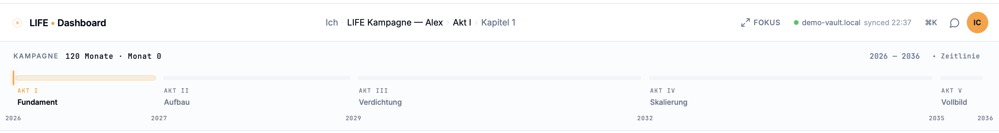
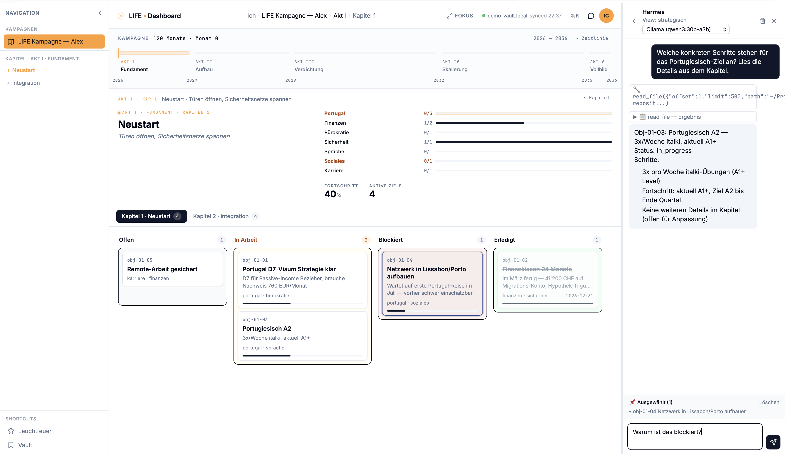
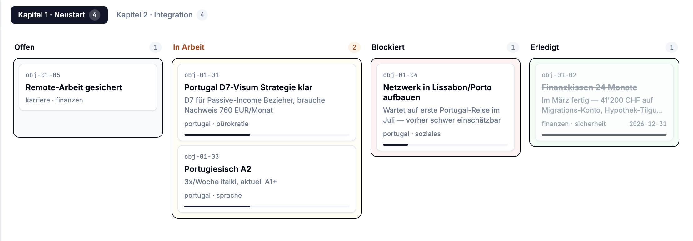
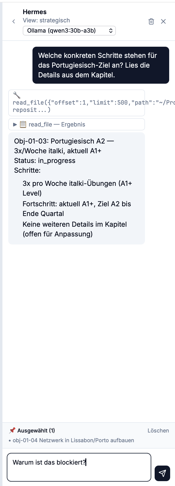

Plate I · Public preview · v0.1.0
Tafel I · Öffentliche Vorschau · v0.1.0
Folio.
A markdown vault as memory. A local AI that knows your situation and thinks alongside you — on your machine, on your terms. Ein Markdown-Vault als Gedächtnis. Eine lokale KI, die deine Lage kennt und mitdenkt — auf deinem Rechner, zu deinen Bedingungen.
No cloud account. No data that leaves your device. You direct; Folio sorts, plans, and keeps the overview — mail, tasks, the larger arc. Kein Cloud-Konto. Keine Daten, die dein Gerät verlassen. Du dirigierst, Folio ordnet, plant und hält den Überblick — Post, Aufgaben, die großen Linien.
demo-vault.local · Akt I · Kapitel 1 · synced 22:37

Pl. I · Folio dashboard · v0.1.0Tafel I · Folio-Dashboard · v0.1.0
a desk lit late.
ein Schreibtisch, spät beleuchtet.
Your life is not a sprint. It is a multi-act campaign. Dein Leben ist kein Sprint. Es ist eine Kampagne in mehreren Akten.
You are not planning the next quarter — you are planning the next decade. Folio provides the architecture for the long game. It strips away the sterile mechanics of corporate productivity tools. Instead, it builds a central hearth: a place to gather your resources, define your chapters, confront your challenges, and consult a personal assistant that knows the whole map. Du planst nicht das nächste Quartal — du planst die nächste Dekade. Folio liefert die Architektur für das lange Spiel. Es entfernt die sterile Mechanik unternehmerischer Produktivitätswerkzeuge. Stattdessen baut es einen zentralen Herd: einen Ort, um Ressourcen zu sammeln, Kapitel zu definieren, Herausforderungen zu stellen und einen persönlichen Assistenten zu konsultieren, der die ganze Karte kennt.
Absolute control over the territory. Warmth in the center. Absolute Kontrolle über das Territorium. Wärme im Zentrum.
A vault as memory.
A campaign as structure.
A hearth at the center. Ein Vault als Gedächtnis.
Eine Kampagne als Struktur.
Ein Herd im Zentrum.
But the real problem lies deeper. Doch das eigentliche Problem liegt tiefer.
The true value of an AI isn't in answering isolated questions. It lies in the invisible connections. Recognizing the threads between resources and goals that you overlook yourself, because you are standing in the middle of the storm. Der wahre Wert einer KI liegt nicht im Beantworten von Einzelfragen. Er liegt in den unsichtbaren Verbindungen. Das Erkennen der Fäden zwischen Ressourcen und Zielen, die man selbst übersieht, weil man mitten im Sturm steht.
That is the bet: a personal assistant that knows your whole picture. Das ist die Wette: Ein persönlicher Assistent, der dein ganzes Bild kennt.
Anyone who works intensely with cloud models knows the quiet ache of the context limit. The moment a trusted digital comrade essentially develops Alzheimer's. It loses the thread of the journey, wishes you the best of luck — and vanishes into nothingness the second the window closes. An irretrievable loss. Wer intensiv mit Cloud-Modellen arbeitet, kennt den stillen Schmerz des Kontext-Limits. Den Moment, in dem ein vertrauter digitaler Begleiter gewissermassen an Alzheimer erkrankt. Er verliert den Faden der gemeinsamen Reise, wünscht dir für die Zukunft noch alles Gute — und verschwindet mit dem Schliessen der Session für immer ins Nichts. Ein unwiederbringlicher Verlust.
Folio ends this forgetting. It is an advisor that stays. An assistant that handles the friction, learns your priorities, weighs the trade-offs, and steadily illuminates the path ahead. Folio beendet dieses Vergessen. Es ist ein Ratgeber, der bleibt. Ein Assistent, der die Reibung übernimmt, deine Prioritäten lernt, Pros und Contras abwägt und dir beständig den Weg ausleuchtet.
Folio provides the engine. The course is yours. Folio liefert das Triebwerk. Den Kurs bestimmst du.
§ Acts of a campaign§ Akte einer Kampagne
the count grows with youdie Anzahl wächst mit dir
I
FoundationFundament
2026
II
BuildAufbau
2027
III
DensityVerdichtung
2028 — 2029
IV
ScaleSkalierung
2030 — 2032
V
Full pictureVollbild
2033 — 2036
§ What it looks like§ Wie es aussieht
Three plates from the night-side of the dashboard. Drei Tafeln von der Nachtseite des Dashboards.


v0.1.0What works todayWas heute funktioniert
- 01Strategic view — campaign banner, all five acts, active chapterStrategische Sicht — Kampagnen-Banner, alle fünf Akte, aktives Kapitel
- 02Tactical view — kanban with drag-and-drop, gantt, objective selectionTaktische Sicht — Kanban mit Drag-and-Drop, Gantt, Objective-Auswahl
- 03Objective detail panel — status, deadline, progress note, historyObjective-Detail-Panel — Status, Deadline, Progress-Note, Historie
- 04Hermes chat — agent reads & edits vault files via tool callsHermes-Chat — Agentin liest und ändert Vault-Dateien via Tool-Calls
- 05Vault format — plain markdown + YAML frontmatter, git-friendlyVault-Format — reines Markdown + YAML-Frontmatter, git-fähig
- 06Setup wizard, demo vault, model switcherSetup-Wizard, Demo-Vault, Modell-Switcher
→ nextWhat's comingWas als nächstes kommt
- v0.2Voice input (STT), interview-style setup wizard, mobile PWA, approval UI for risky tool callsSpracheingabe (STT), Interview-Setup-Wizard, Mobile PWA, Approval-UI für riskante Tool-Calls
- v0.3Frostpunk view — generator metaphor, resource decay, harder visual atmosphereFrostpunk-Sicht — Generator-Metapher, Ressourcen-Decay, härtere visuelle Atmosphäre
- v1.0Multi-user, NAS deployment, public vault templatesMulti-User, NAS-Deploy, öffentliche Vault-Templates
Built by one person. Slow on purpose.
Issues and pull requests welcome.
Von einer Person gebaut. Bewusst langsam.
Issues und Pull-Requests willkommen.
The workshopDie Werkstatt
Multi-Agent
The workshop behind Folio — and the most battle-tested piece. 550+ real emails, classified and triaged, every single one human-decided. A local pipeline; nothing leaves the machine. Die Werkstatt hinter Folio — und das am härtesten erprobte Stück. 550+ echte E-Mails, klassifiziert und sortiert, jede einzelne vom Menschen entschieden. Eine lokale Pipeline; nichts verlässt den Rechner.
New: document import with staging inbox and LLM triage — agents never write directly to the target store; every proposal passes deterministic guardrails; model choice via eval harness. Spec → Neu: Dokumenten-Import mit Staging-Inbox und LLM-Triage — Agenten schreiben nie direkt in den Zielspeicher; jeder Vorschlag passiert deterministische Guardrails; Modellauswahl per Eval-Harness. Spec →
Open to inspect. If you build, you'll find the mechanics here, not just the promise. Offen einsehbar. Wer selbst baut, findet hier die Mechanik, nicht nur das Versprechen.
the full mechanism, honestly ledgered →die ganze Mechanik, ehrlich bilanziert →
STATUS: PUBLIC PREVIEW
STATUS: ÖFFENTLICHE VORSCHAU
Use it.
Break it.
Show me the cracks.
Nutze es.
Brich es.
Zeig mir die Risse.
The story behind Folio →Die Geschichte hinter Folio →
"Tools for the next decade of your life — kept on your machine, in your formats, on your terms." „Werkzeuge für das nächste Jahrzehnt deines Lebens — auf deinem Rechner, in deinen Formaten, zu deinen Bedingungen."
— afm.